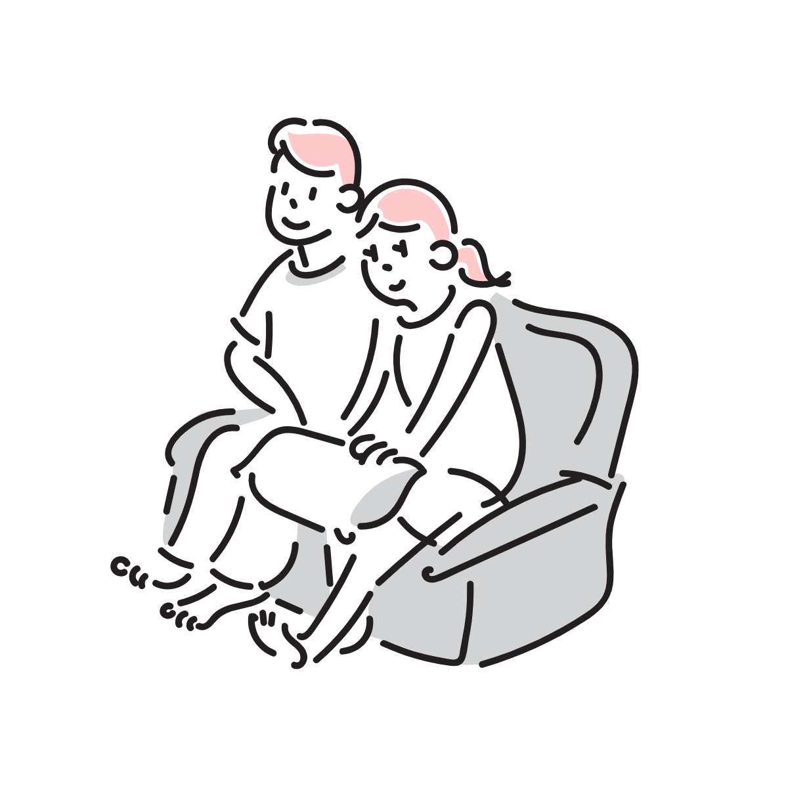

Story
忙しい日常の中で思いを伝え合う
毎日の忙しい生活の中でいつの間にかパートナーと話す時間が少なくなっていることに気付くことはありませんか？家事も仕事もがんばってくれていることに感謝していて、大切に思っていても「こうしてくれたら嬉しいな」という小さな気持ちは伝える機会を逃してしまいがち。
そんな時、このアプリを使うことで思いやりの気持ちが育まれて相手との心の距離もぐっと近づき、お互いをさらに大切に感じられるようになります。(共働き夫婦）
安心感の中で思いやりを育む
長年結婚生活を共にしてきた夫婦には安心感や深い信頼、そして言葉にしなくても分かり合えるような絆が育まれています。長く一緒にいるからこそ日常が当たり前になる一方で、家事分担などの役割や関係性が固定化されて相手の見方が少し凝り固まってしまうことも...。
そんな時アプリを利用することで相手の喜ぶことや良い所に改めて気付けてお互いを思いやる気持ちを深められます。(長年結婚生活を共にしている夫婦)
相互理解を深めることで関係をより良好に
このアプリでは相手にしてほしいことをリストで共有して取り組み合うことで相手への感謝と思いやりの気持ちを持ちながら高め合えます。これにより多くの夫婦が抱えている心のモヤモヤ・関係性の固定化問題を解消して絆をより深めます。さらに、科学的に癒し効果が認められている植物の成長によってユーザーを温かい気持ちにして心の距離を縮められるようにしたいと考えています。
How it works
パートナーが私にしてほしいことリスト
リストはあらかじめテンプレートを表示します。左側のアイコンでリスト内容を一目で確認できて右側の完了ボタンでリストアイテムの完了評価ができます。パートナーがしてほしいことを自分が取り組むと進捗に応じて植物も育ちます。
私がパートナーにしてほしいことリスト
各リストアイテムの右のドットからはリストアイテムの編集・削除ができます。フッター中央の追加ボタンからはアイコンの種類を選択した上でリストアイテムとして相手にしてほしいことを入力して登録できます。登録できるリストアイテム数は相手の心理的負担を減らすために5個までとなっています。
履歴
アプリの利用開始、パートナーにグループURL共有、リストアイテムの編集・削除・登録等これまでの変更と変更した日時を一覧表示します。
その他の設定
パートナーの招待、データの初期化、テーマカラーの変更などの3つのモードから選べます。アプリを開いた後にパートナーを登録する際、パートナーの招待ボタンからLINEでグループURLを共有できます。
【注意】 制作したアプリがスマホ対応であるため、必ずスマホで開いて下さい
パートナーにLINEグループURLを送って招待する機能はまだ実装できていません。ご理解の程よろしくお願いします。
アプリに移る